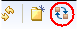

When the sequence of work in your project changes, it's a good idea to reorder the planning folders
so that they keep accurately reflecting the real order of work.
By default, planning folders are ordered according to when they were created.
New planning folders are added to the end of the folder tree.
-
In the CollabNet Sites view, right-click the planning folder whose subfolders you want to reorder, and select Reorder Planning Folders.
To reorder planning folders at the top level, select the Planning Folders node.
Tip: If you're working with the Planning Board, click the
Reorder Planning Folders icon.

-
Organize the subfolders:
- To sort them alphabetically, click
Alphabetize.
- To reorder a specific folder, select it by clicking the title,
then click Move Up or Move
Down until the folder is where you want
it.
-
Click OK.